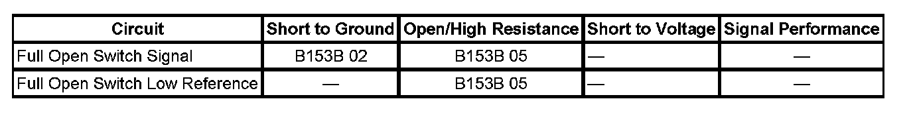

B153B
DTC B153B
DTC DESCRIPTOR
DTC B153B 02
Liftgate Open Switch Signal Circuit Short to Ground
DTC B153B 05
Liftgate Open Switch Signal Circuit Short to Short to Battery or Open
DIAGNOSTIC FAULT INFORMATION

Perform the Diagnostic System Check - Vehicle prior to using this diagnostic procedure. Initial Inspection and Diagnostic Overview
CIRCUIT/SYSTEM DESCRIPTION
The full open switch is part of the gear motor assembly and will close and become active when the liftgate reaches the full open position. The full open switch signal circuit is supplied battery voltage through a resistor and monitored within the liftgate control module. The liftgate control module provides a low reference circuit and when the switch contacts close, the signal circuit goes low and the liftgate control module determines the switch to be active.
CONDITIONS FOR RUNNING THE DTC
- System voltage to the liftgate control module must be 9-16 volts.
- Power open or close operation is attempted.
CONDITIONS FOR SETTING THE DTC
- During power open operation, the full open switch does not become active when the hall sensor counts indicate the open cycle is complete.
- During power close operation, the full open switch remains active when the hall sensor counts indicate the close cycle has begun.
ACTION TAKEN WHEN THE DTC SETS
B153B 02
Power open operation will be disabled.
B153B 05
Power close operation will be disabled.
CONDITIONS FOR CLEARING THE DTC
- The DTC will be current for as long as the fault is present.
- When the fault is no longer present the DTC will be a history status code.
CIRCUIT/SYSTEM TESTING
1. Ignition ON, open the liftgate to the full open position and verify that the Full Open switch parameter is Active.
- If the switch parameter is displayed as Inactive, test the full open switch signal circuit for an open/high resistance. If the circuit tests normal, replace the liftgate control module.
2. Disconnect the full open switch connector and verify that the Full Open switch parameter is Inactive.
- If the switch parameter is displayed as Active, test the full open switch signal circuit for a short to ground. If the circuit tests normal, replace the liftgate control module.
3. If the circuits test normal, replace the full open switch.
REPAIR INSTRUCTIONS
Perform the Diagnostic Repair Verification after completing the diagnostic procedure.
- Liftgate Actuator Switch Replacement
- Control Module References for liftgate control module replacement, programming and setup. Verification Tests Programming and Relearning